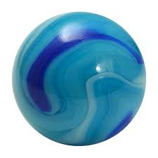
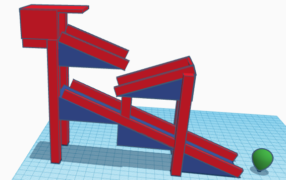
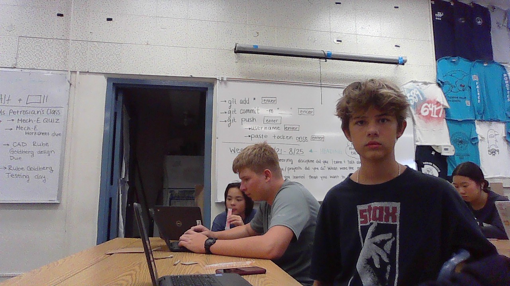

Andrew's website !?!?
8/21-24/23 Week 1
Today is Thursday. I had Living Earth and AP Hug today.
After school today I have practice for MTB. This week was pretty
easy. I also took some funny pictures of the group. We had an
experiment with the half pipes and marbles, we did pretty bad but
it was pretty fun. I look forward to more in the future.

Week 2 : 8/27-31/23
Today is Thursday again. I had my same classes and they were pretty
and easy. In AP Hug today we made our places chart and I did Mammoth
I again have practice today at 4 and we are going to mainly just do some
paperwork again. Engineering was ok today.
Week 3 : 9/5-9/8
Today is yet again Thursday. Our construction of our "roller coaster"
is going smoothly. My group started working on our stability but not did
get too far yet. Next class we are planning on finishing our stabilizers
and starting our top portion that holds the car. We still need to work
on our idea of the pulley with the string holding the baseball. Joe was
our materials manager for today and collected the cardboard, our bucket,
and our hardboard. He let me cut a stabilizer with the box cutter.

Week 4 : 9/11-9/15
Today we tested our roller coasters. Ours took a while but we eventually
fixed it. We just had to increase the force to the needle. We also had to
extend the needle so it reached the balloon. It took us around 20 tries
and alot of deleted videos.

Week 5 : 9/18-9/22
Today we worked on our computer engineering worksheet. It was pretty easy
but I will have to watch some of the video at home. On Monday we tried to
upload videos. On Tuesday we made paper boats and saw whos could carry
the most weight. Mine lasted the full 5 mins or so. Today we filled out
the comp mech worksheet and watched the video.